Deploying our Server to Heroku
As a related exercise (and a useful one!) you should complete this lab in the context of your own Web App, and deploy your Node Server to Heroku.
Step 01 - Requirements
For reference, I mainly used this link and this link to put these steps together.
Before you can deploy to heroku using this lab you need to have the following downloaded & installed and/or setup
- Heroku Account (so visit Heroku.com and create one)
- Node and npm
- Heroku Toolbelt
- Git
- Bitbucket or GitHub Account (I'll be using Bitbucket here)
- SourceTree (make sure you have this one installed before progressing with the actual lab, otherwise, just follow the steps from the links above)
Step 02 - Using BitBucket & SourceTree
Once you have your BitBucket account set up, go ahead and create a new repository

In this lab I'll be naming it donationwebtest but once you call it something relevant you'll be fine.
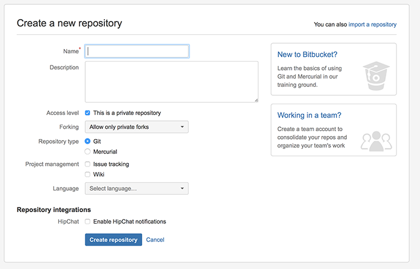
I also set the language to Javascript (as below) but this is purely for completeness

You now have a number of different options to populate your repository (repo) but we're going to use SourceTree for this, so go ahead and choose 'Clone in SourceTree'
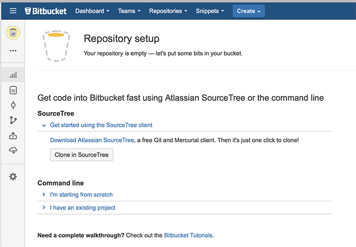
Choose a local folder to 'sync' with your remote repo and click 'Clone'. This will now create a local copy of your remote repo you've just created on BitBucket - but it's empty, so let's add some files to our repo.
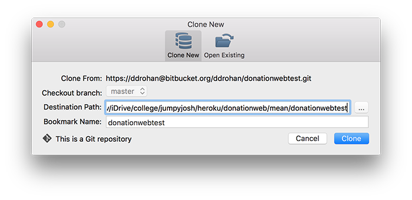
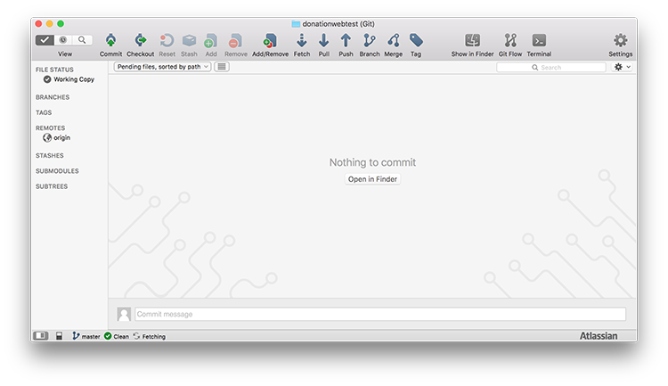
Navigate to you local folder in Windows Explorer or Finder and copy in some files - in this Example I'm copying in the solution to our donationweb-5.0 web app, but be careful NOT to copy the hidden .git folder
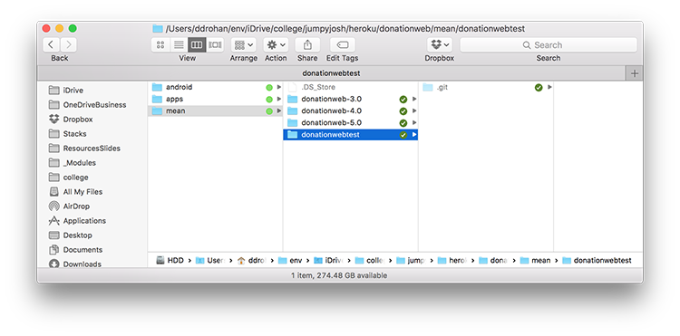
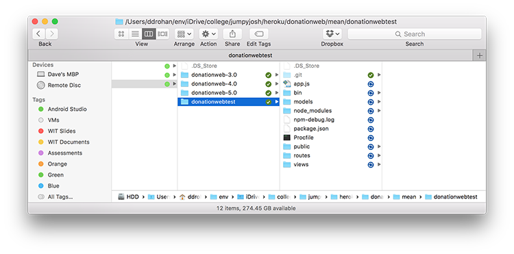
If you now switch back to SourceTree, you'll see a list of all the files in our local folder that have yet to be pushed and/or committed to our remote repo.
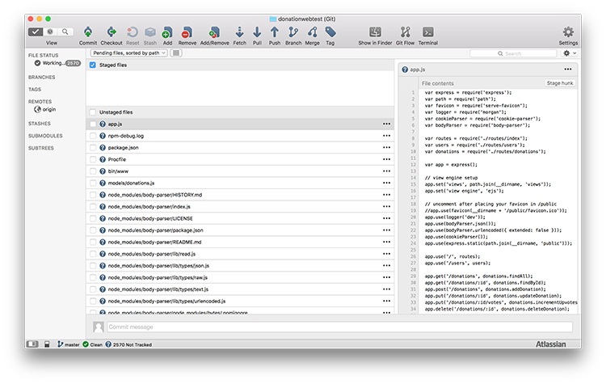
'Tick' the unstaged file checkbox and you'll get something like this
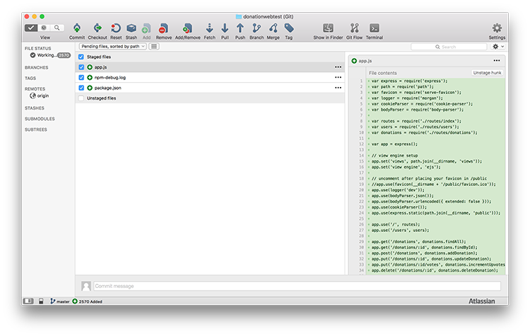
Click the 'Commit' button and enter a brief description
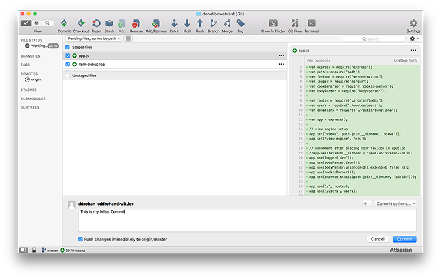
and all our files will be synced with our remote BitBucket repo.
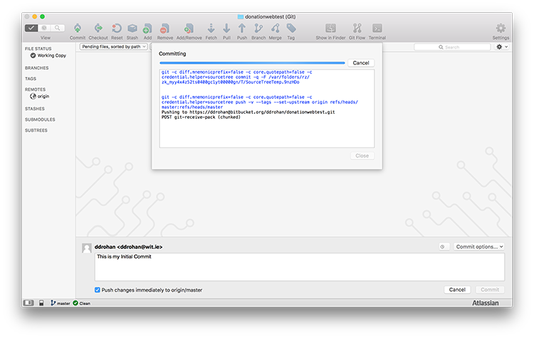
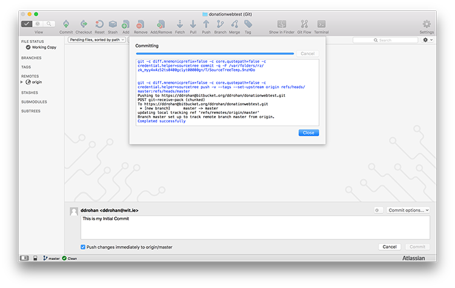
Now, visit your previously created repo online, go to the 'source' option, and you should see the same list of files - Congratulations! You've just committed your first set of files to a remote repository (which you can share, clone, etc.)
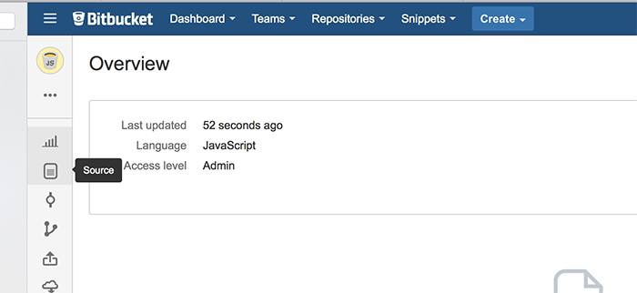
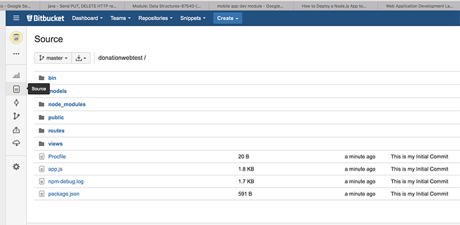
Just as an exercise, go ahead an make a change to some file(s) in your local repo and see can you 'commit' those changes to your remote repo, like I've done here.
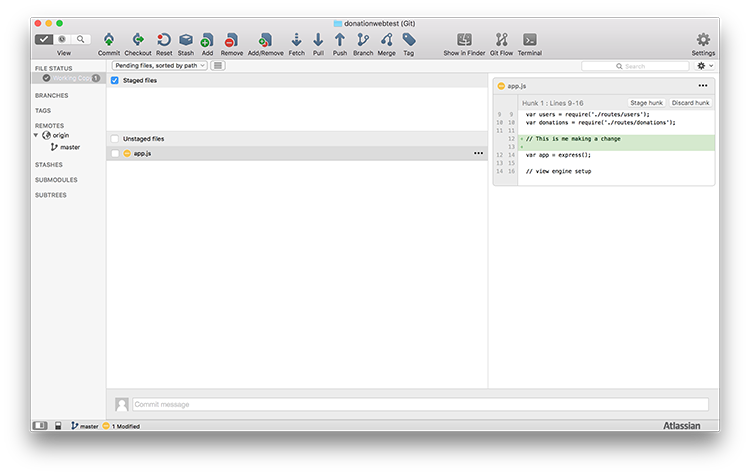
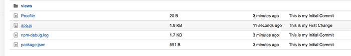
Step 03 - The Heroku Toolbelt
At this stage you can now create repositories and manage you projects and files through git and Bitbucket + SourceTree. To actually deploy a Node Web App to Heroku you need the Heroku Toolbelt.
The Heroku toolbelt gives you access to the Heroku Command Line Utility, as well as git, (tools we’ll use later).
After you've installed the Toolbelt, you have access to the heroku commands. Go into your command line and type:
$ heroku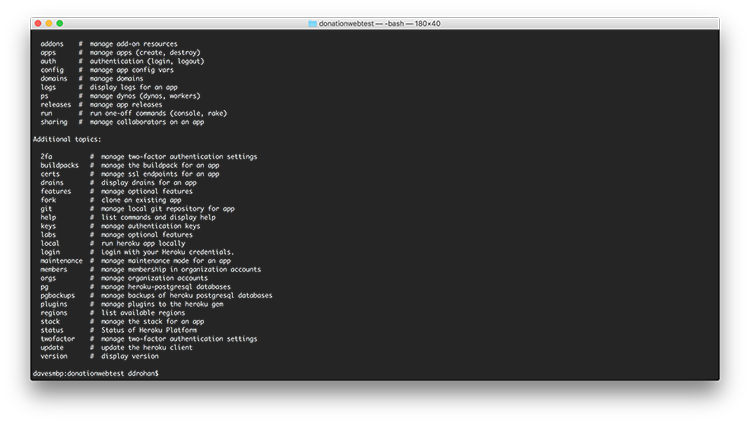
You get a full list of the available Heroku commands, but we'l only be using a few of them.
The next step is to login to your (already created!) Heroku account, so at the command line, type
$ heroku loginand enter your Heroku credentials
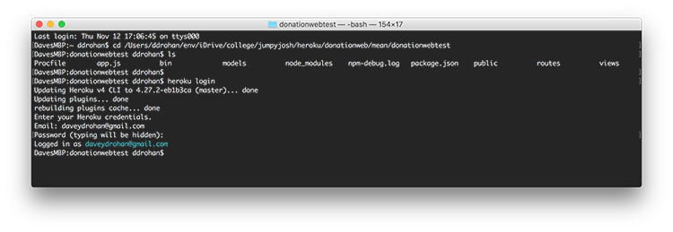
Now type
$ heroku create donationwebtestwhere 'donationwebtest' is the name of the web app you wish to create.
Note : the web app name needs to be unique, so if a node web app already exists with the name you've chosen, you'll get an error
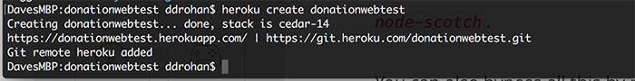
You can always leave the name empty
$ heroku createand Heroku will generate a random web app name for you?
Visit your Heroku Account online to confirm your app was created successfully.
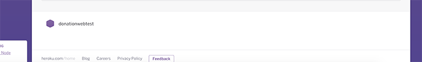
Now, to deploy your node web app to Heroku type the following (once you've already created a git repo)
$ git push heroku masterand you should get a long list of deployment messages (as below)
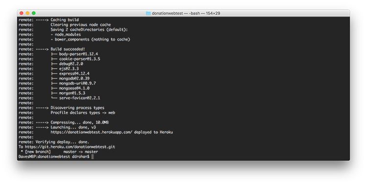
You should then be able to visit http://myherokuappname.herokuapp.com and see your node web app in all its glory.
For our example though, things aren't looking so good? Have you any idea why?
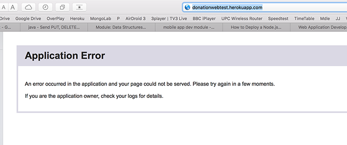
(We'll fix this in the final step!)
Step 04 - Heroku & MongoLab
NOTE : MONGOLAB IS NOW MLAB SO THIS STEP IS A LITTLE OUT OF DATE. WHAT I ACTUALLY DID WITH OUR NODE SERVER WAS SET UP THE MLAB CONNECTION BEFOREHAND SO WHEN IT WAS DEPLOYED IT ALREADY HAD THE PROPER CONNECTION. IF YOU'VE FOLLOWED THE LABS YOU WILL HAVE THIS SETUP YOURSELF ALREADY SO THIS STEP ISN'T REQUIRED.
As previously mentioned, the web app didn't load correctly. It failed to launch due to no backend database present - this final step will take you through the process of setting up a mongodb database via one of Heroku's many addons MongoLab
First, visit your Heroku dashboard for your web app and select the ' Resources' tab
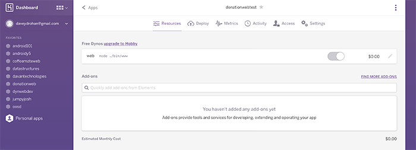
In the 'Add-ons' Search box, enter mongo (or mongolab to be complete)
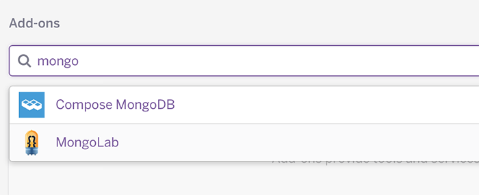
and select the 'mongoLab' Add-on. 'Provision' the Free Sandbox Plan, and the MongoLab Add-on will be added to your web app.
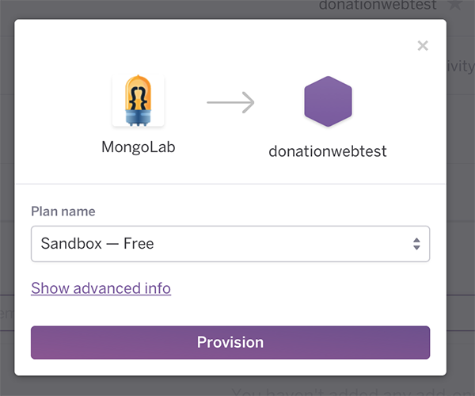
Now, select the new Add-on and you'll be taken to the associated MongoLab Account
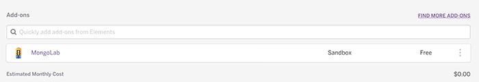
and a randomly generated database (as below)
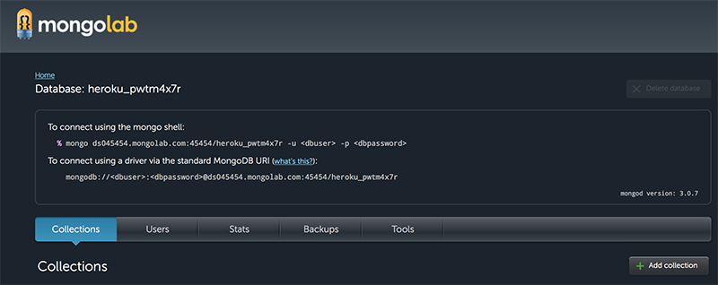
The connection string is very important, as this is how we will connect to our mongo database in our web app.
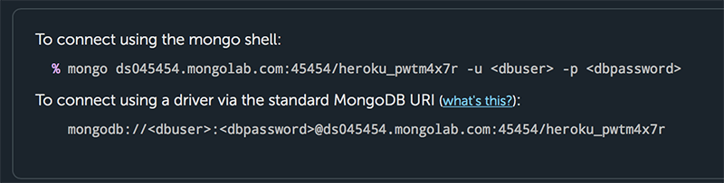
There is also a default user set up, but I find it easier to add a new user (as it's easier to remember the username and password that we'll need later to connect to our database in our javascript code).
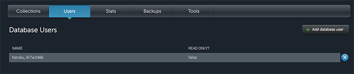
So go ahead and create/add a new user.
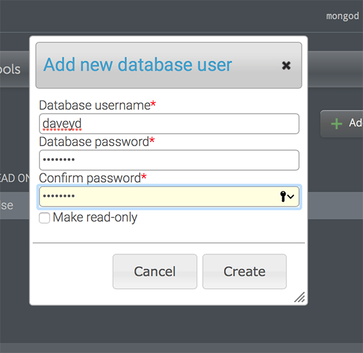
You can delete the default user if you wish, but it's not a requirement for all this to work. Here, we now have only 1 user - daveyd (me!).

The penultimate step is to set up the connection in your node web app, so go to your routes file 'donations.js' (in our example) and configure your web app to connect to the mongodb database and not your local db, as is currently the case.
Something like this
var options = { server: { socketOptions: { keepAlive: 1, connectTimeoutMS: 30000 } },
replset: { socketOptions: { keepAlive: 1, connectTimeoutMS : 30000 } },
user: 'YOURMONGODBUSERNAME', pass: 'YOURMONGODBPASSWORD' };
//ENTER YOUR MONGODB CONNECTION STRING HERE IN PLACE OF MY ONE
var mongodbUri = 'mongodb://ds063XXX.mongolab.com:63892/heroku_XXXXXXXX';
var mongooseUri = uriUtil.formatMongoose(mongodbUri);
//mongoose.connect('mongodb://localhost:27017/donationsdb');
mongoose.connect(mongooseUri,options);Now ,the last thing you need to do, is 'commit' your changes and deploy your app to Heroku again. You can do this either through the command line or SourceTree, but I've noticed that the odd time SourceTree doesn't work correctly, so if you don't see all the deployment messages through SourceTree, just complete the deployment from the command line.
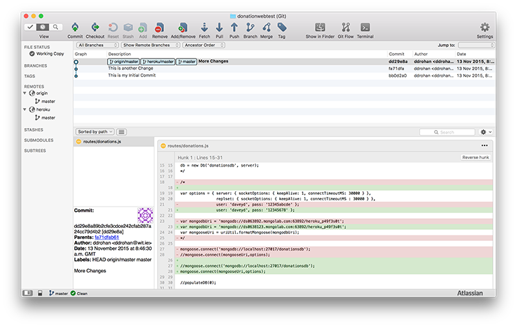
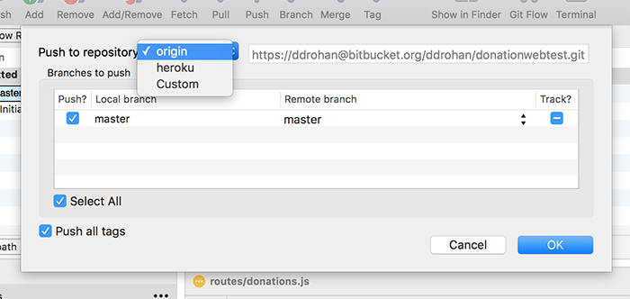
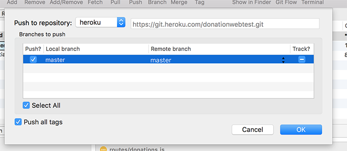
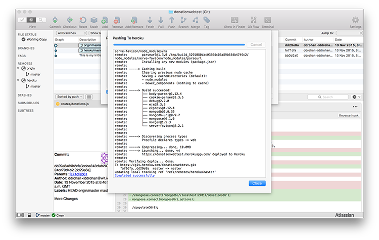
As a final confirmation that everything is working correctly, just add a donation and check that it's in your mongodb database.
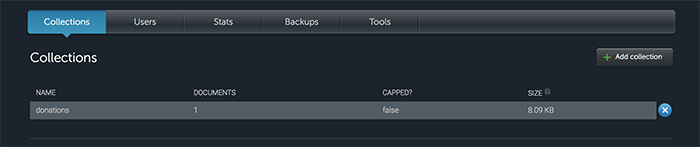
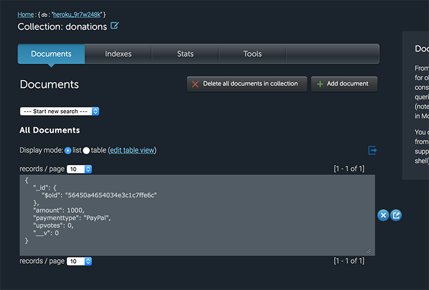